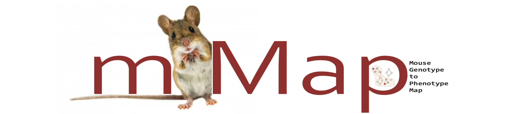

mMap results for ExampleResults
Proteins with Alternative Alleles and Allele Conversation
*conservation scale = more nagative means more conserved site and vice-versa
Altered Protein Functional Regions Enrichment
Altered GO terms Enrichment
Altered Biological Pathways Enrichment
Altered Biological processes Enrichment
Alternative Allele containing Protein(s) Interaction Network
Alternative Allele containing Protein(s) Single Cell RNA Expression